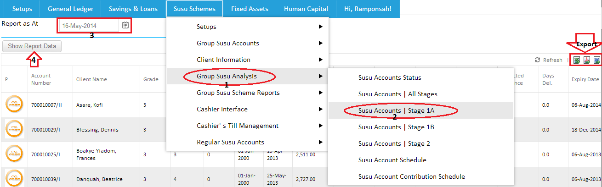

The Susu Accounts Stage 1A can be assessed by selecting the susu scheme,follow the drop down to "Susu Analysis" and locate Susu Accounts stage 1A.After clicking on it, to select accounts status, you first have to define the period in which you want report ie the date.Click on "Show Report Data" to retrieve the information which you require as shown in the image below.

Created with the Personal Edition of HelpNDoc: Free EPub and documentation generator